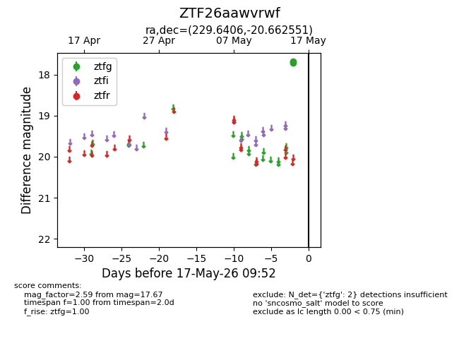
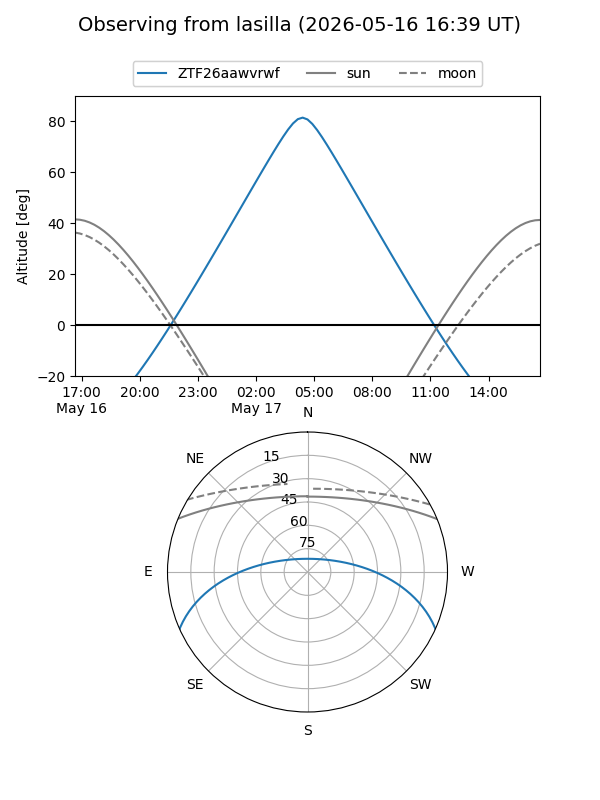
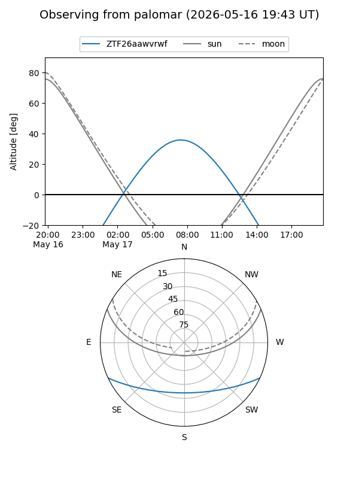

ZTF26aawvrwf
Target ZTF26aawvrwf at 2026-05-17 09:54
Aliases and brokers:
FINK: link
Lasair: link
ALeRCE: link
alt names
ZTF26aawvrwf (ztf,fink_ztf)
Coordinates:
equatorial (ra, dec) = 229.6406,-20.66255
equatorial (HMS+DMS) = 15:18:33.74,-20:39:45.18
galactic (l, b) = (343.4405,+30.40209)
Flags:
Photometry:
last ztfg=17.67
2 ztfg detections
Lightcurve

Visibility


Additional plots